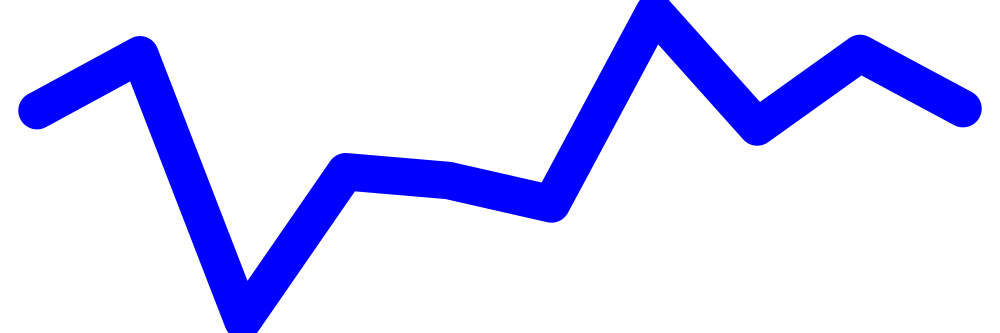
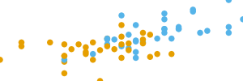

library(tinytable)
options(tinytable_tt_digits = 3)
options(tinytable_latex_placement = "H")
x <- mtcars[1:4, 1:5]Plots and images
The plot_tt() function can embed images and plots in a tinytable. We can insert images by specifying their paths and positions (i/j).
Inserting images in tables
To insert images in a table, we use the plot_tt() function. The path_img values must be relative to the main document saved by save_tt() or to the Quarto (or Rmarkdown) document in which the code is executed.
dat <- data.frame(
Species = c("Spider", "Squirrel"),
Image = ""
)
img <- c(
"figures/spider.png",
"figures/squirrel.png"
)
tt(dat) |>
plot_tt(j = 2, images = img, height = 3)| Species | Image |
|---|---|
| Spider |  |
| Squirrel |  |
In HTML tables, it is possible to insert tables directly from a web address, but not in LaTeX.
dat <- data.frame("R" = "")
img <- "https://cran.r-project.org/Rlogo.svg"
tt(dat) |>
plot_tt(i = 1, j = 1, images = img, height = 7) |>
style_tt(j = 1, align = "c")| R |
|---|
 |
Inline plots
We can draw inline plots three ways, with
- Built-in templates for histograms, density plots, and bar plots
- Custom plots using base
Rplots. - Custom plots using
ggplot2.
To draw custom plots, one simply has to define a custom function, whose structure we illustrate below.
Built-in plots
There are several types of inline plots available by default. For example,
plot_data <- list(mtcars$mpg, mtcars$hp, mtcars$qsec)
dat <- data.frame(
Variables = c("mpg", "hp", "qsec"),
Histogram = "",
Density = "",
Bar = "",
Line = ""
)
# random data for sparklines
lines <- lapply(1:3, \(x) data.frame(x = 1:10, y = rnorm(10)))
tt(dat) |>
plot_tt(j = 2, fun = "histogram", data = plot_data) |>
plot_tt(j = 3, fun = "density", data = plot_data, color = "darkgreen") |>
plot_tt(j = 4, fun = "bar", data = list(2, 3, 6), color = "orange") |>
plot_tt(j = 5, fun = "line", data = lines, color = "blue") |>
style_tt(j = 2:5, align = "c")| Variables | Histogram | Density | Bar | Line |
|---|---|---|---|---|
| mpg |  |
 |
 |
|
| hp |  |
 |
 |
|
| qsec |  |
 |
 |
 |
Custom plots: Base R
Important: Custom functions must have ... as an argument.
To create a custom inline plot using Base R plotting functions, we create a function that returns another function. tinytable will then call that second function internally to generate the plot.
This is easier than it sounds! For example:
f <- function(d, ...) {
function() hist(d, axes = FALSE, ann = FALSE, col = "lightblue")
}
plot_data <- list(mtcars$mpg, mtcars$hp, mtcars$qsec)
dat <- data.frame(Variables = c("mpg", "hp", "qsec"), Histogram = "")
tt(dat) |>
plot_tt(j = 2, fun = f, data = plot_data)| Variables | Histogram |
|---|---|
| mpg |  |
| hp |  |
| qsec |  |
Custom plots: ggplot2
Important: Custom functions must have ... as an argument.
To create a custom inline plot using ggplot2, we create a function that returns a ggplot object:
library(ggplot2)
Attaching package: 'ggplot2'The following object is masked from 'package:tinytable':
theme_voidf <- function(d, color = "black", ...) {
d <- data.frame(x = d)
ggplot(d, aes(x = x)) +
geom_histogram(bins = 30, color = color, fill = color) +
scale_x_continuous(expand = c(0, 0)) +
scale_y_continuous(expand = c(0, 0)) +
theme_void()
}
plot_data <- list(mtcars$mpg, mtcars$hp, mtcars$qsec)
tt(dat) |>
plot_tt(j = 2, fun = f, data = plot_data, color = "pink")| Variables | Histogram |
|---|---|
| mpg |  |
| hp |  |
| qsec |  |
We can insert arbitrarily complex plots by customizing the ggplot2 call:
penguins <- read.csv(
"https://vincentarelbundock.github.io/Rdatasets/csv/palmerpenguins/penguins.csv",
na.strings = ""
) |> na.omit()
# split data by species
dat <- split(penguins, penguins$species)
body <- lapply(dat, \(x) x$body_mass_g)
flip <- lapply(dat, \(x) x$flipper_length_mm)
# create nearly empty table
tab <- data.frame(
"Species" = names(dat),
"Body Mass" = "",
"Flipper Length" = "",
"Body vs. Flipper" = "",
check.names = FALSE
)
# custom ggplot2 function to create inline plot
f <- function(d, ...) {
ggplot(d, aes(x = flipper_length_mm, y = body_mass_g, color = sex)) +
geom_point(size = .2) +
scale_x_continuous(expand = c(0, 0)) +
scale_y_continuous(expand = c(0, 0)) +
scale_color_manual(values = c("#E69F00", "#56B4E9")) +
theme_void() +
theme(legend.position = "none")
}
# `tinytable` calls
tt(tab) |>
plot_tt(j = 2, fun = "histogram", data = body, height = 2) |>
plot_tt(j = 3, fun = "density", data = flip, height = 2) |>
plot_tt(j = 4, fun = f, data = dat, height = 2) |>
style_tt(j = 2:4, align = "c")| Species | Body Mass | Flipper Length | Body vs. Flipper |
|---|---|---|---|
| Adelie |  |
 |
 |
| Chinstrap |  |
 |
 |
| Gentoo |  |
 |
 |
Fontawesome
We can use the fontawesome package to include fancy icons in HTML tables:
library(fontawesome)
tmp <- mtcars[1:4, 1:4]
tmp[1, 1] <- paste(fa("r-project"), "for statistics")
tt(tmp)| mpg | cyl | disp | hp |
|---|---|---|---|
| for statistics | 6 | 160 | 110 |
| 21 | 6 | 160 | 110 |
| 22.8 | 4 | 108 | 93 |
| 21.4 | 6 | 258 | 110 |